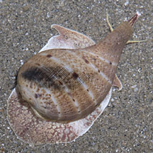
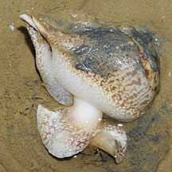
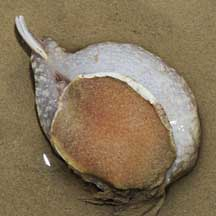
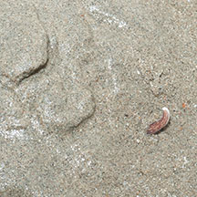
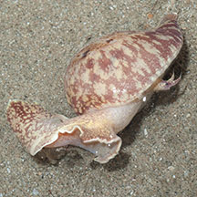
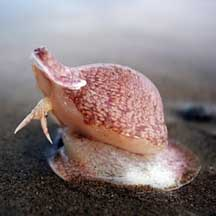

|
|
| shelled snails text index | photo index |
| Phylum Mollusca > Class Gastropoda |
| Fig
snail Ficus variegata Family Ficidae updated Jul 2020 Where seen? These snails are not commonly encountered. Mainly on wide clean sandy shores that are rich in buried marine life. They are usually more active at night. At low tide they are usually buried in the sand and only emerge at high tide. Features: 8-10cm long. The thin but strong shell is shaped like a fig, bulbous with a very short spire and large shell opening. Shell pattern usually white spirals with dark irregular bars over a speckled brown background. Mantle fleshy mottled often enclosing the entire shell. The snail has a large head with two long tentacles, a very long proboscis, and a long siphon. Large strong foot. It does not have an operculum an adult. |
|
 Changi, Oct 11 |
 East Coast, Dec 08 |
 East Coast, Dec 08 |
| What do they eat? From Mei Lin's study, their prey is unknown. Their teeth and feeding structures suggest they don't eat large prey. Remains of worms have been seen in some species of fig snails. According to Poutiers, they eat sea urchins and other echninoderms. But there have been no actual observations of them doing so. |
 Buried with only its siphon sticking out. Changi East, Dec 12 |
 Changi East, Dec 12 |
| Fig snails on Singapore shores |
On wildsingapore
flickr
|
| Other sightings on Singapore shores |
 |
| Family
Ficidae recorded for Singapore from Tan Siong Kiat and Henrietta P. M. Woo, 2010 Preliminary Checklist of The Molluscs of Singapore.
|
Links
References
|